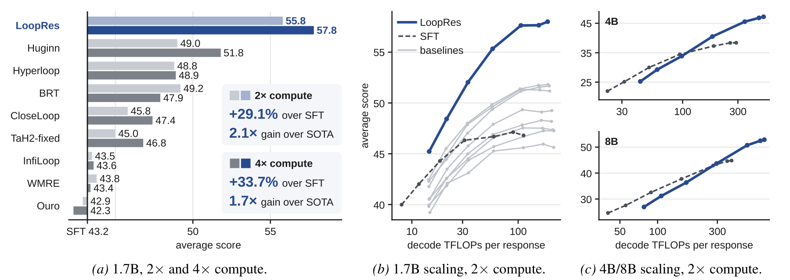
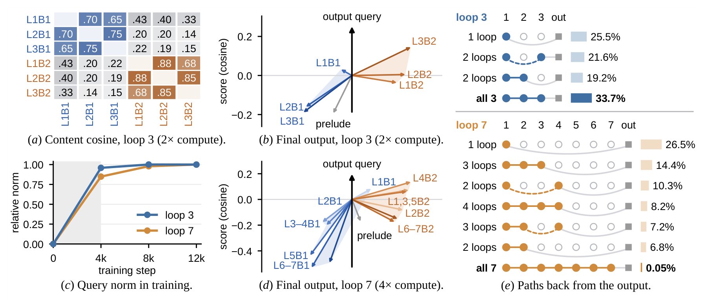
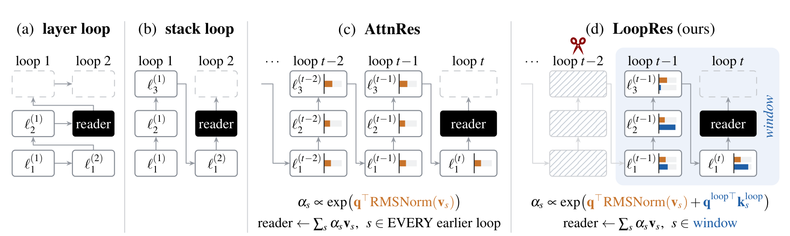
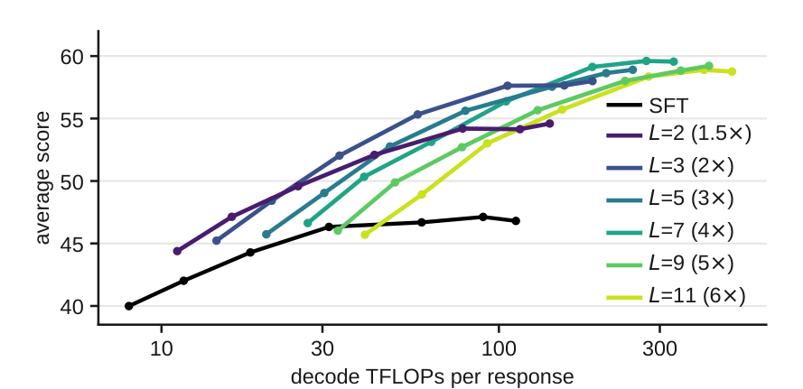
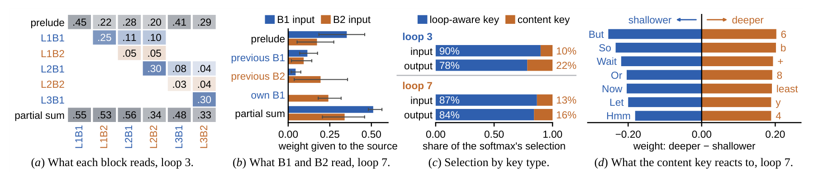
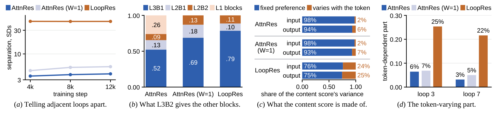

Looped Transformers iterate a shared block of layers to increase computation without adding parameters, offering stronger performance and test-time scaling. However, this power has so far required training from scratch and yielded only modest gains for LLMs. Finetuning existing models into loops is far cheaper, yet also brings only marginal gains over SFT. We propose LoopRes, an effective, scalable, and simple approach that turns loops into significant and consistent gains for pretrained LLMs. Building on Attention Residuals, LoopRes lets each looped layer attend directly to the outputs of earlier loops. Since these outputs are iterates of the same layers and become harder to tell apart, we give each a trainable loop-aware key that encodes its structural identity. Attending to all earlier loops also lets layers skip intermediate ones, so we restrict each layer to a residual window of the latest W loops, forcing every loop to build incrementally on recent ones. Across 6 pretrained LLMs from 3 model families and 9 benchmarks, LoopRes delivers significant and consistent gains: at 2× compute, it improves Qwen3-1.7B-Base by 29.1% over SFT, more than doubling the gain of the state-of-the-art baseline. The gains hold on larger models up to 30B and across all three families. More importantly, from 1.7B to 8B, LoopRes scales more steeply than SFT as compute grows, reaching a higher ceiling while needing less compute on long outputs. These results establish LoopRes as an effective looping approach, delivering both better performance and better test-time scaling.
AttnRes assumes sources that differ in content and are fixed in number. In loops, the sources are iterates of the same layers, so they become similar in content and grow in number.
Iterates of the same block are far more similar to each other than to other blocks, so they receive similar scores. This worsens as loops deepen.
The query norm reaches most of its final value within the first third of finetuning, which may commit the model to its early connection pattern.
Layers can skip intermediate loops. The weight on the path through every loop falls from 33.7% with three loops to 0.05% with seven.

LoopRes keeps the input-dependent mechanism of AttnRes and introduces two improvements:
Each source gets a trainable key per block per loop alongside its content key. It distinguishes iterates of the same layers by their coordinates and is optimized directly.
Each layer attends only to the previous W loops. This prevents skipping to distant loops and bounds each input to (W+1)B+1 sources.
where \(\mathbf{q}^{\text{loop}}\) is the loop-aware query and \(\mathbf{q}\) the content query, both initialized to zero.

Select a block to view its sources, with B=2 and L=7.
def loop_res(values: list[Tensor], loop_keys: list[Tensor], loop_query: Tensor, content_query: Tensor,
norm: RMSNorm) -> Tensor:
"""
AttnRes input with loop-aware keys.
values:
S sources of shape [N, T, D]
loop_keys:
S loop-aware keys of shape [D], one trainable vector per source
"""
values = torch.stack(values) # [S, N, T, D]
loop_keys = torch.stack(loop_keys) # [S, D]
content_keys = norm(values) # [S, N, T, D], as in AttnRes
logits = torch.einsum('d, s n t d -> s n t', content_query, content_keys)
logits = logits + torch.einsum('d, s d -> s', loop_query, loop_keys)[:, None, None] # loop-aware keys
weights = logits.softmax(0)
return torch.einsum('s n t, s n t d -> n t d', weights, values)
def forward(self, prelude_out: Tensor) -> Tensor:
"""
prelude_out:
[N, T, D]: output of the prelude; the returned core output goes to the coda
"""
# residual window: the blocks of the previous W loops and their loop-aware keys
window_values, window_keys = [], []
for t in range(self.num_loops):
values = [prelude_out] + window_values
loop_keys = [self.prelude_key] + window_keys
# block AttnRes over the core; every sub-layer forms its input by loop_res, with its own queries in loop t
blocks = []
for i, block in enumerate(self.core_blocks):
blocks.append(block(values + blocks, loop_keys + self.block_keys[t][:i], loop=t))
# end of loop t: once the window is full, drop all blocks of its oldest loop, then add loop t
if len(window_values) == self.window_size * self.num_blocks:
del window_values[:self.num_blocks], window_keys[:self.num_blocks]
window_values += blocks
window_keys += self.block_keys[t]
# output: the window and the blocks of the last loop
return loop_res(values + blocks, loop_keys + self.block_keys[t],
self.output_loop_query, self.output_content_query, self.output_norm)Figure 9. PyTorch-style pseudo code for LoopRes. Lines in blue mark its two changes to Block AttnRes: (i) loop_res adds a loop-aware key to each source. (ii) Each loop takes a residual window of the previous W loops as input, from which older loops are dropped.
LoopRes, SFT, and 8 baselines on 7 benchmarks at 2× and 4× compute, with every baseline reimplemented on the same backbone, data, and hyperparameters.
| method | math | code | avg. | Δ | loss | Δ | |||||
|---|---|---|---|---|---|---|---|---|---|---|---|
| AIME25 | AIME26 | AMC23 | Olympiad | MATH500 | HE+ | MBPP+ | |||||
| SFT | 14.6 | 11.7 | 48.6 | 40.7 | 73.4 | 57.3 | 56.2 | 43.2 | – | 0.312 | – |
| Huginn | 19.6 | 14.4 | 54.1 | 46.5 | 80.4 | 64.2 | 64.0 | 49.0 | 13.5%↑ | 0.303 | 2.8%↓ |
| Ouro | 12.5 | 9.2 | 47.8 | 40.4 | 74.6 | 59.1 | 56.6 | 42.9 | 0.8%↓ | 0.315 | 1.1%↑ |
| Hyperloop | 18.3 | 16.7 | 54.4 | 47.1 | 77.6 | 66.9 | 60.4 | 48.8 | 12.9%↑ | 0.303 | 2.9%↓ |
| TaH2-fixed | 15.8 | 12.5 | 50.0 | 41.3 | 75.8 | 62.3 | 57.0 | 45.0 | 4.0%↑ | 0.306 | 1.7%↓ |
| WMRE | 16.2 | 10.6 | 51.2 | 40.7 | 74.0 | 60.1 | 54.1 | 43.8 | 1.5%↑ | 0.311 | 0.3%↓ |
| CloseLoop | 16.5 | 13.3 | 50.0 | 44.1 | 78.8 | 61.4 | 56.7 | 45.8 | 6.0%↑ | 0.309 | 1.0%↓ |
| InfiLoop | 14.4 | 10.8 | 49.4 | 42.4 | 73.0 | 58.4 | 56.3 | 43.5 | 0.7%↑ | 0.312 | 0.0%↑ |
| BRT | 21.7 | 15.4 | 53.6 | 45.0 | 79.0 | 66.6 | 63.2 | 49.2 | 13.9%↑ | 0.302 | 3.0%↓ |
| LoopRes | 27.9 | 19.4 | 64.7 | 53.8 | 84.0 | 71.8 | 68.9 | 55.8 | 29.1%↑ | 0.292 | 6.3%↓ |
| SFT | 14.6 | 11.7 | 48.6 | 40.7 | 73.4 | 57.3 | 56.2 | 43.2 | – | 0.312 | – |
| Huginn | 24.4 | 18.3 | 58.8 | 50.4 | 80.0 | 66.2 | 64.3 | 51.8 | 19.8%↑ | 0.299 | 4.1%↓ |
| Ouro | 13.5 | 11.2 | 45.6 | 40.4 | 75.4 | 56.9 | 52.8 | 42.3 | 2.2%↓ | 0.321 | 3.1%↑ |
| Hyperloop | 18.5 | 15.8 | 54.7 | 46.7 | 79.6 | 63.4 | 63.6 | 48.9 | 13.2%↑ | 0.303 | 2.8%↓ |
| TaH2-fixed | 18.8 | 12.7 | 52.2 | 43.1 | 77.0 | 64.0 | 59.8 | 46.8 | 8.3%↑ | 0.303 | 2.6%↓ |
| WMRE | 12.7 | 11.2 | 49.5 | 41.9 | 73.4 | 60.1 | 55.2 | 43.4 | 0.5%↑ | 0.312 | 0.1%↑ |
| CloseLoop | 18.3 | 13.8 | 55.5 | 44.1 | 77.0 | 64.8 | 58.3 | 47.4 | 9.7%↑ | 0.307 | 1.4%↓ |
| InfiLoop | 13.5 | 10.8 | 49.8 | 40.9 | 76.4 | 57.9 | 55.8 | 43.6 | 0.9%↑ | 0.312 | 0.0%↑ |
| BRT | 21.2 | 13.8 | 54.7 | 44.7 | 77.0 | 64.2 | 59.4 | 47.9 | 10.7%↑ | 0.305 | 2.0%↓ |
| LoopRes | 30.2 | 24.6 | 67.5 | 52.9 | 84.2 | 75.3 | 69.8 | 57.8 | 33.7%↑ | 0.291 | 6.8%↓ |
Table 1. Comparison with baselines at 2× and 4× compute on Qwen3-1.7B-Base. Δ is the change relative to SFT. HE+ denotes HumanEval+.
LoopRes achieves the best score on every benchmark at both compute budgets, more than doubling the gain of the strongest baseline at 2× compute. The relative gains are largest on the hardest benchmarks, such as AIME.
The score improves as loops deepen and gradually saturates beyond L = 5. The best trade-off between score and compute is at L = 3.

LoopRes improves every benchmark on Qwen3-4B, 8B, and 30B-A3B, and its score rises with a clearly steeper slope than SFT as decode FLOPs grow. LoopRes on the 4B backbone even surpasses SFT on the 8B one in average score.
| method | A25 | A26 | Oly | IMO | LCB | avg. | Δ |
|---|---|---|---|---|---|---|---|
| Qwen3-4B-Base | |||||||
| SFT | 35.4 | 38.3 | 61.6 | 20.5 | 27.4 | 36.6 | – |
| LoopRes | 47.1 | 51.0 | 68.3 | 29.6 | 32.9 | 45.8 | +9.2 |
| Qwen3-8B-Base | |||||||
| SFT | 39.6 | 46.0 | 65.5 | 30.9 | 32.6 | 42.9 | – |
| LoopRes | 51.5 | 62.9 | 72.3 | 35.5 | 35.1 | 51.5 | +8.6 |
| Qwen3-30B-A3B-Base | |||||||
| SFT | 59.6 | 66.3 | 72.9 | 38.6 | 38.3 | 55.1 | – |
| LoopRes | 65.4 | 72.5 | 76.4 | 44.9 | 44.0 | 60.6 | +5.5 |
Table 3. Results on larger backbones at 2× compute. A25/A26: AIME25/26, Oly: OlympiadBench, IMO: IMO-AnswerBench, LCB: LiveCodeBench v6.
LoopRes also improves every benchmark on Llama-3.2-1B and Qwen3.5-2B-Base, whose architectures differ from Qwen3.
| backbone | SFT avg. | LoopRes avg. | Δ |
|---|---|---|---|
| Llama-3.2-1B | 14.3 | 19.6 | +5.4 |
| Qwen3.5-2B-Base | 52.1 | 64.1 | +12.0 |
Table 4. Results on Llama-3.2-1B and Qwen3.5-2B-Base at 2× compute. Δ is in points.
We ablate the components of LoopRes on Qwen3-1.7B-Base at both compute budgets.
| variant | 2× compute | 4× compute | ||
|---|---|---|---|---|
| avg. | Δ | avg. | Δ | |
| LoopRes | 55.8 | – | 57.8 | – |
| Huginn + AttnRes | 53.9 | −1.9 | 55.0 | −2.8 |
| Residual window (LoopRes: W = 1) | ||||
| W = 2 | 55.2 | −0.6 | 57.5 | −0.3 |
| W = 3 | – | – | 57.7 | −0.1 |
| Key (LoopRes: loop-aware + content) | ||||
| loop-aware only | 54.9 | −0.9 | 57.5 | −0.3 |
| content only | 54.9 | −0.9 | 55.8 | −2.0 |
Table 5. Ablation study of LoopRes on Qwen3-1.7B-Base. Each group varies one component.
Applying AttnRes to Huginn without loop-aware keys or the residual window performs clearly worse, and the gap widens as loops deepen.
A larger window reduces the average score, so LoopRes uses W = 1, which achieves the best score at the lowest cost.
Either key alone performs worse than the two combined. As loops deepen, dropping the loop-aware key hurts more.
We visualize how LoopRes weighs its sources, revealing three patterns.
The first block mainly updates its own output from the previous loop, while the second on average relies most on the first block of the current loop.
The loop-aware key accounts for most of the selection at both compute budgets.
The content key lets each token choose its own depth: simple tokens favor shallower outputs, while digits and math symbols favor deeper ones.

We further compare LoopRes with AttnRes, with and without the residual window, revealing three differences.
LoopRes separates adjacent loops clearly from early in finetuning, while AttnRes struggles even with the window.
The window removes shortcuts to the first loop, and LoopRes further concentrates the weight on the preceding block.
The content score of AttnRes is almost a fixed preference. In LoopRes, it varies far more with the token, even as loops deepen.

@misc{zhao2026loopres,
title={Unlocking the Power of Loops in Pretrained LLMs with Loop Residuals},
author={Zhao, Xuanlei and Xu, Hailun and Wang, Kai and Luo, Yang and Ren, Yingxuan and Zhu, Zirui and Lou, Yuxuan and Xu, Kun and Wang, Yan and Sarkar, Kanchan and You, Yang},
year={2026},
note={Preprint}
}